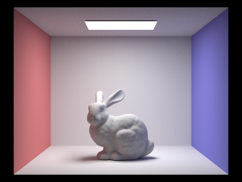

Part 1: Ray Generation and Intersection
|
|
|
|
|
|
Ray Generation
To generate ray we need to transform the pixel coordinates in normalized image space to the sensor coordinates in camera space.
Given the normalized coordinates, the sensor coordinates x_ and y_ can be calculated by first shifting the points to the center
in sensor plane, and then multiplying them with the tangent of the field of view.
Then we get the sensor coordinates in camera space (x_, y_, -1),
which is also the direction that the ray points to in camera space.
Then, we need to transform the ray to world space and normalize it. The position of the ray is the camera position.
We also need to set the max_t and min_t to the far and near clipping planes.
Generate Pixels
To get rays for updating pixels, we need to get ns_aa number of samples within the pixel randomly.
This is done by girdSampler. Then we need to normalized the pixel coordinates and get rays using the
ray generation method described above. The radiance estimates of ns_aa samples are averaged and assigned to framebuffer.
Sphere Intersection
To test ray intersection with a sphere, we solve the time t of intersection for the equation \((o + td - c)^2 - R^2 = 0\), where o us tge position of the ray,
d is the direction of the ray, c is the center of sphere, and R is the radius of the sphere. The equation above can be expand to a
classical quadratic equation with coefficients a, b, and c. The resulting time can be calculated using formula \(t = \frac{-b \pm \sqrt{b^2-4ac}}{2a}\).
The smaller one of the two is selected if existed and real, and if the selected one is within the clipping range of the ray,
we get an intersection. The intersection variable is updated with the normal (r.o + t * r.d - o).unit(), bsdf, and other properties.
Triangle Intersection
Triangle intersection test is done by Moller Trumbore algorithm shown in the figure below. O is the position of the ray. D is the direction of the ray. \(P_1, P_2, P_3\) are the position of the vertices of the triangle mesh. \(b_1, b_2\) are the barycentric coordinates for vertices 1 and 2 of the triangle mesh. If time is within the clipping range of the ray, and barycentric coordinates have the correct range, we know that ray intersects with the mesh.

|
|
Part 2: Bounding Volume Hierarchy
BVH construction
BVH accelerates the ray intersection process. At each BVHNode, a bounding box is constructed for all input primitives,
and the axis on which primitives are splitted is randomly chosen.
The splitting point is the centroid of the selected axis of the current bounding box.
For example, when the chosen axis is x, center = bbox.centroid().x; gets the splitting point. std::partition
is used to split the vector container and get the midpoint of the split. If the centroid of the primitive is less than the centroid of
the axis, the primitive is moved to the left half of the container, as shown in the code below:
mid = std::partition(start, end,
[center](Primitive * prim){return prim->get_bbox().centroid().x < center;});
If the mid point equals the start or end of the vector container, we need to shift its value by 1 to make sure there is no infinite recursion.
construct_bvh is called twice again recursively with the left half or the right half of the container as the input.
The recursion goes on until size of the input container is less than max_leaf_size.
The reason to select random axis to split the primitives is that, in some cases where there is a huge mesh right next to a group of very dense tiny meshes, choosing the longest axis as the splitting axis does not work, because the axis indicated by the large mesh does not optimize the split for tiny dense meshes. In worst case (CBdragon, where the mesh of box is large, mesh of dragon is dense and small), one child node always contains one primitive in each split, which can lead to segfault. Therefore, we need randomness to break the worst cases described above.
|
|
|
BVH Acceleration Analysis
Shown in the table below, Using BVH can lead to significant improvement in time. The most obvious example is maxplanck. It has 50801 mesh, and when BVH is on, it only takes 0.06 seconds to render, but when BVH is off, it takes 231 seconds to render. Because cow only has 4856 meshes, it is relative easy to render it without BVH, but it still takes about 22 seconds. When number of meshes is large enough, it becomes impossible to render it. This suggests that BVH can accelerate the process. One interesting observation is that when BVH is on, the time for rendering is roughly the same for all four cases in the table. The time for rendering lucy and dragon is slightly lower, which is probably due to the fact that objects in Cornell Box seem to be placed further away from the camera, so there are less rays hitting the largest bounding box.
| Name | With BVH | Without BVH | #primitives |
|---|---|---|---|
| Cow | 0.0530s | 22.0693s | 5856 |
| maxplanck | 0.0677s | 231.3094s | 50801 |
| CBdragon | 0.0455s | --- | 100012 |
| CBlucy | 0.0346s | --- | 133796 |
Part 3: Direct Illumination
Hemisphere Sampling
For each sample, create a ray pointing out from the current intersection point with Ray direct_ray(hit_p, o2w * sample);,
where sample is a vector randomly and uniformly sampled from hemisphereSampler with probability \(\frac{1}{2\pi}\).
If we hit a mesh and its emission is not zero, we add the reflected radiance to the total estimation with equation
estimator += emission * isect.bsdf->f(w_out, -sample) * dot(w2o * isect.n, sample);. At the end,
the total radiance is divided by the number of samples and normalized with the sampling probability to get the average.
direct_ray.min_t is set to EPS_F to make sure ray does not hit itself.
Importance Sampling
For each plane light source, ns_area_light number of emissions are created from (*light)->sample_L(),
along with its distance to light source, sampling probability, and direction vector. For each sample, a ray is created
to test if the ray going out from current intersection point is blocked by any object.
The ray has its direct_ray.max_t roughly equal to the distance to light. If there is no intersection,
the emission from light source is not blocked by any object, and we can add the reflected radiance to the total estimation
with equation estimator += emission * isect.bsdf->f(w_out, - w2o * sample) * dot(isect.n, sample) / pdf;.
When loop has gone through all light sources ns_area_light number of times,
the total estimation is divided by ns_area_light to get the average.
When the light source is a point, because the light source sampling is deterministic, one intersection test is enough to know if the light is blocked by any object in between, we can simplify the sampling process and remove the inner loop of light sampling.
Comparison
When the light tracing parameters are the same, hemisphere sampling has more noise than light importance sampling. The images rendered by light importance sampling have shaper shadows compared to hemisphere sampling, and they are also generally brighter. This is because in hemisphere sampling, rays going out from the initial intersection points are uniformly sampled, there are less rays directly pointing to light sources. However, in light importance sampling, all rays always point to light sources. Similar to hemisphere sampling, importance sampling also has light/shadow gradient on rendered spheres, because the light source is a surface, so the rays in this case is randomly sampled. Some rays are blocked by the curvature of the sphere, which creates the gradient effect. Another thing that is worth to mention is that for objects not placed in the cornell box, only black image is rendered when hemisphere sampling is used. This is probably caused by small area of light source in those files, as mentioned on Piazza.

|
|

|
|
Noise Levels in Soft Shadows
As the number of light rays increases, the shadow is less spread out, and the transition from shadow to light is more smooth. This also means that the variance of light at each pixel goes down and the sample mean goes closer to the true mean. This is because the majority of light rays come from a plane source, and light rays are randomly sampled from the plane source. As the number of light rays increases, the average becomes a better estimate of how much light from the plane source is blocked. More transition colors are created through estimation at the boundary of the shadow.
|
|
|

|

|
|
|
|
|
|
Part 4: Global Illumination
Indirect Light function
In at_least_one_bounce_radiance(), a ray is created with r_in(hit_p, o2w * w_in),
where hit_p is the position of the current intersection point, and w_in is the
outward direction vector sampled from isect.bsdf->sample_f().
If the current ray depth has not reached the max ray depth,
we get one bound radiance at the current intersection point using the function one_bound_radiance().
Then, if the new ray intersects with a new surface, and Russian Roulette is not terminated,
the function at_least_one_bounce_radiance() is called again recursively with the new ray as the input.
Radiance is added up using formula
L_out += at_least_one_bounce_radiance(r_in, insect_in) * bsdf * dot(w2o * isect.n, w_in) / pdf / CONT_PROB; .
Every time at_least_one_bounce_radiance is called,
the depth is decremented by one, and recursion terminates when depth reaches 0 or by Russian Roulette.
Russian Roulette continuation probability is set to 0.7.
Total radiance displayed is the result returned from at_least_one_bounce_radiance plus zero_bound_radiance
|
|
|
|
Comparison between Indirect and Direct Illumination
Direct Illumination includes zeroth and first bounces. It is the same as the image from the direct illumination part. In the image of indirect illumination, the first two bounds are not there, but other bounds are. The direct illumination has higher brightness, and it is clear that if a surface does not face toward the light source, it is complete black. In the image of indirect illumination, it is overall dark, but everywhere except the light source in the scene has some light. Also, in the indirect illumination image, the colors from the red and blue walls are also reflected to the spheres, so the spheres have a little bit red and blue colors, which is not the case in the image of direct illumination.
|
|
|
Maximum Ray Depth Comparison
The first three images have the largest difference. When the light bounces at least three times, the scene is overall bright and natural. As maximum depth increases further more, we can see the colors from the two walls are reflected more to other places in the scene, However, the difference between depth=4 and depth=100 is not very big compared to the first three images.
|
|
|
|
|
|

|
Samples per Pixel Comparison
When samples per pixel is low, there is a lot of noises. For example, when s=1, 2, or 3, the pixels of the bunny have a lot of random red and blue colors. This is because there are not enough samples to get the correct average values. As samples per pixel increase, we see the noise is getting lower. One good advantage of using Monte Carlo to estimate the scene is that even when sample per pixel is low, the expectance is still the real image.
|
|
|

|
|
|
|
|
|
Part 5: Adaptive Sampling
Adaptive Sampling Implementation
In raytrace_pixel(), for each sampling iteration, we get the illuminance using method estimator.illum(),
where estimator is the value returned from est_radiance_global_illumination().
Then we compute \(s_1 = \sum_{k=1}^nx_k\) and \(s_2 = \sum_{k=1}^nx_k^2\),
where \(x_k\) is the illuminance at \(k^{th}\) sample.
We use the following formulas to determine whether to terminate every samplesPerBatch iteration:
\(\mu = \frac{s_1}{n}\)
\(\sigma^2 = \frac{1}{n-1} (s_2 - \frac{s_1^2}{n})\)
\(I = 1.96 \frac{\sigma}{\sqrt{n}}\)
\(I \leq maxTolerance * \mu\)
MAX_TOLERANCE is set to 0.05 here. At every samplesPerBatch iteration, the test above is performed.
If \(1.96 \frac{\sigma}{\sqrt{n}} \leq maxTolerance * \mu\), we break the sampling loop and average the current estimation by
the current number of iteration. The average radiance estimation is added to sampleBuffer.
The current iteration number is also recorded in sampleCountBuffer.
|
|
|

|
|